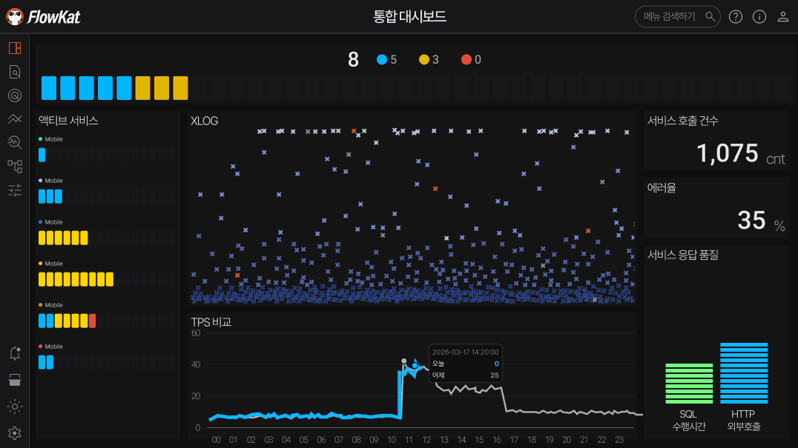
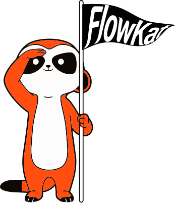
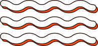
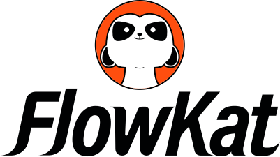
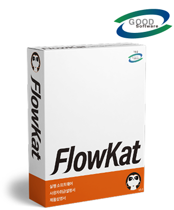
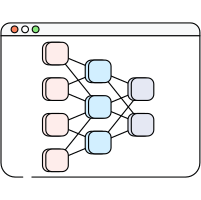
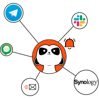
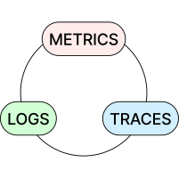
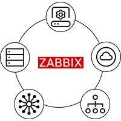

로그가 있다? 로그를 잇다!
WAS를 중심으로 고객의 모든 서비스를 모니터링합니다.

데이터 흐름 Flow
+
모니터링의 생활화 Meerkat
=

공공기관 전자정부프레임워크 성능 관리는 플로우캣과 함께
GS인증으로 검증된 품질과 나라장터 등록을 통한 신속한 도입 프로세스
플로우캣

시스템관리소프트웨어
물품식별번호 26032663
업체명
주식회사 플로우캣
규격명
시스템관리소프트웨어, 플로우캣, FlowKat v5.0,
웹 애플리케이션 서버(WEB/WAS)/세션
클러스터링/APM(애플리케이션 성능 모니터링),
License
웹 애플리케이션 서버(WEB/WAS)/세션
클러스터링/APM(애플리케이션 성능 모니터링),
License
계약번호
R26TA1405587-00-1
든든한 모니터링 파트너 플로우캣
빠르고 정확한 진단으로 고객과의 신뢰 구축
담당자 A
저렴한 도입 비용으로 많은 서버를 관제할 수 있었습니다. OS 상태까지 모니터링 되어 편리합니다.
담당자 B
기관 분리 때 URL 기준의 모니터링으로 미처 보지 못한 서비스를 파악하기 쉬웠습니다.
개발자 A
사용자 친화적인 대시보드와 담당자에 따라 설정할 수 있는 권한 기능들 주력으로 사용 중입니다.
개발자 B
매주 5초 이상 지연되던 쿼리를 개선하여 고객 만족도 조사에서 좋은 점수를 받았습니다.
개발자 C
크롤링 패턴을 실시간 감지하여 파트너에 노출되는 기능을 긴급 적용하여 대응했었네요.
운영자 A
학사정보시스템 공동코드의 변경 사항이 적용되지 않는 문제를 플로우캣과 함께 해결했습니다.
복잡한 Java 성능 관리의 나침반
오픈소스 Scouter의 강력한 엔진에 직관적인 UI/UX를 더했습니다.



